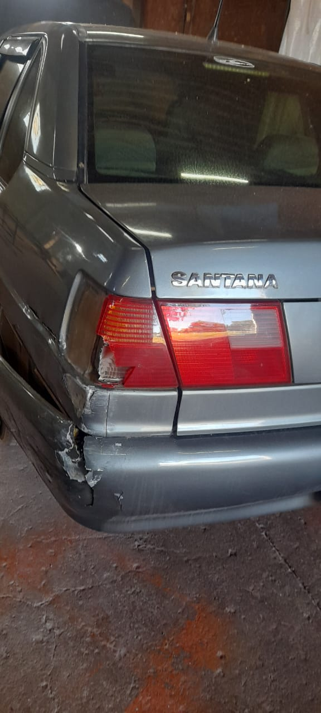
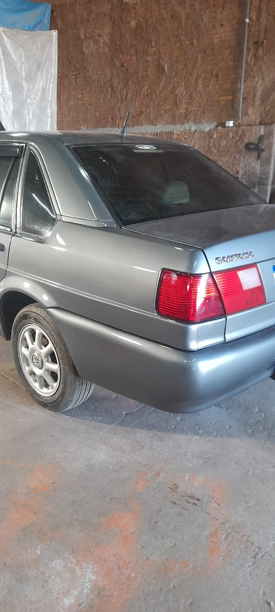

Restauração estrutural e estética de peças danificadas. Alinhamos precisão técnica e acabamento refinado para devolver as linhas originais do seu veículo após amassados ou colisões.

Trabalhamos com equipamentos modernos de desamassamento e alinhamento de painéis, garantindo que a estrutura metálica do carro seja restaurada sem dobras ou ondulações visíveis no resultado final.
Mapeamento da extensão do dano e definição da técnica adequada de desamassamento.
Trabalho de funilaria para nivelar a chapa e recompor o desenho original do veículo.
Lixamento e aplicação de primer para receber a pintura com total aderência.
Envie uma foto do dano pelo WhatsApp e receba um orçamento prévio.
Falar com EspecialistaConfira o resultado de um dos nossos trabalhos.
